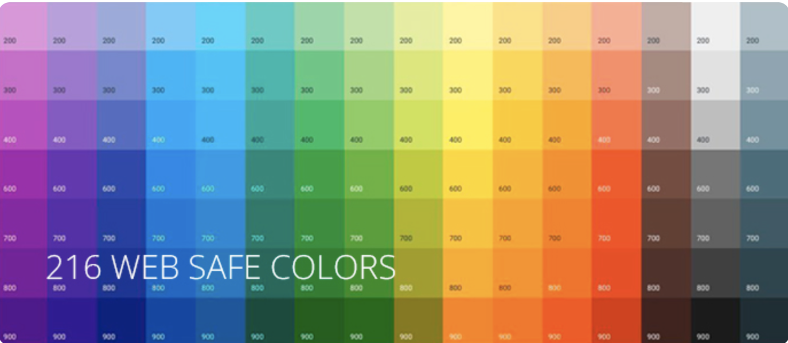
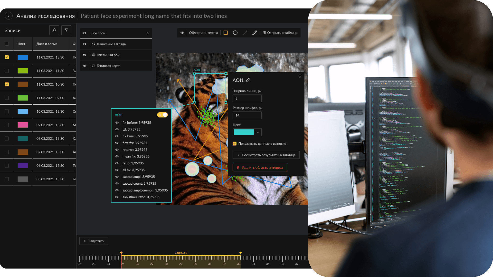

← Назад
ДОП
При кодировании цвета в устаревшем теге FONT можно указывать некоторые забавные значения, например:
BruceWillis
chucknorris
sick
crap
Почему HTML считает, что «chucknorris» — это цвет?
Пропускаемые цифры распознаются как 0[...]. Некорректные символы распознаются как 0. Так что, например, значения #F0F0F0, F0F0F0, F0F0F, #FxFxFx и FxFxFx – одно и то же.
- Заменяем все неправильные шестнадцатеричные символы нулями 0, chucknorris превращается в c00c0000000
- “Добиваем” число нулями до количества знаков, делимого на 3 (11 -> 12), получаем c00c 0000 0000
- Разбиваем на три группы, каждая из которых отвечает за одну компоненту RGB:RGB (c00c, 0000, 0000
- Обрезаем каждый из аргументов справа, оставляя 2 символа, и получаем наш результат RGB (c0, 00, 00) = #C00000 или он же RGB(192, 0, 0).
Безопасная палитра
«Безопасные», Web Safe или Browser Safe цвета – это палитра, состоящая из 216 оттенков, которые отображаются максимально точно независимо от монитора компьютера или выбранного браузера, способного отображать, по крайней мере, 8-ми битный цвет (256 цветов).
Аддитивным способ представления цвета (основанный на сложении): смешиваются три луча √ красный (Red), зеленый (Green), синий (Blue). Сочетание всех лучей дает белый, а их отсутствие - черный цвета. Палитра RGB используется в Web-дизайне.
Сочетание только двух из трех лучей приводит к образованию одного из трех цветов субтрактивного (основанного на вычитании) способа представления - голубой (Cyan), пурпурный (Magenta) и желтый (Yellow). Палитра CMYK используется в цветной полиграфии.
Но есть цвета, передающиеся одинаково навсем и вся (кроме старинных мониторов) - это так называемая безопасная палитра. Безопасная палитра состоит из всех возможных сочетаний 6 оттенков красного, зеленого и синего (RGB) с равномерным шагом. Таких оттенков 6х6х6=216 (остальные 40 используются в качестве системных). При использовании цветов этой палитры можно быть уверенным в том, что каждый цвет будет передан без искажений и может быть использован для графики, текста и фонов.
Для обозначения цветов безопасной палитры используются 00, 33, 66, 99, CC,. FF - для шестнадцатеричного обозначения в html и 0, 51, 102, 153, 204, 255 - для графических редакторов. Правда, некоторые графические редакторы для указания цвета используют проценты. В этом случае ряд значений выглядит как 0%, 20%, 40%, 60%, 80%, 100%. При обозначении цветов в html-документах вначале ставят знак номера #.
Красный будет обозначаться как 255, 0, 0 в Photoshop-e и #FF0000 в html.

Как дизайн решает бизнес-задачи
Дизайнеры говорят, что они решают бизнес-задачи. И это правда, иначе бизнес отказался бы платить. Другое дело, что дизайнеры часто не могут объяснить, как именно они это делают.Где связь между пользовательскими сценариями, сеткой, цветами, UI-китом, протоколами тестирования и той самой задачей, с которой пришел к ним бизнес? В этой статье мы закроем этот пробел и на примерах покажем связь между бизнес-задачами и деятельностью UX-дизайнеров.
Что такое дизайн-задача
Дизайнер не решает бизнес-задачу целиком. Бизнес-задача всегда комплексная и требует привлечения разных специалистов. Более того, пути решения бизнес-задачи также могут быть разными, и не для каждого нужен дизайн. Отсюда следует, что мы не можем описать роль дизайнера, опираясь только на формулировку бизнес-задачи. Нам нужно что-то более конкретное и приближенное к нашей дизайнерской деятельности. То есть дизайн-задача.
Дизайн-задача формулирует, что именно и какими средствами должен сделать дизайнер, чтобы сделать свой вклад в решение бизнес-задачи. Также дизайн-задача содержит дополнительные требования и ограничения, которые выясняются в процессе обсуждения будущего проекта.
В нашей компании мы прописываем бизнес-задачу и следующую из нее дизайн-задачу для каждого проекта. Такой прием позволяет нам не терять фокус в процессе работы и делать ровно то, что требуется бизнесу.
Типовые задачи бизнеса
Мы проанализировать несколько десятков дизайн-проектов за последние годы и сгруппировали их по типам запросов наших клиентов.
- Вывести собственные наработки на рынок.
- Привести интерфейс в соответствие отраслевым стандартам.
- Создать с нуля систему или продукт по высокоуровневой постановке.
- Усилить собственную экспертизу в области UX.
- Точечно улучшить интерфейс.

Вывести собственные наработки на рынок
Особенности бизнес-задач этого типа
- Значительная часть дизайн-экспертизы находится внутри компании-заказчика.
- Наличие работающего продукта требует от заказчика привлечения внешних исполнителей для свежего непредвзятого взгляда.
- Дизайн часто рассматривается как одно из конкурентных преимуществ, поэтому требования к нему достаточно высокие.
1. Калибратор тока и напряжения
Бизнес-задача: вывести на широкий рынок собственную разработку, предложив интерфейс в качестве конкурентного преимущества.
Дизайн-задача: создать интерфейс, который будет выгодно отличаться от аналогов удобством, скоростью работы и эстетикой.
2. Автоматизация бизнес-процессов
Бизнес-задача: создать упрощенную версию внутреннего продукта для другого сегмента рынка; использовать упрощенную версию продукта для привлечения покупателей основного продукта.
Дизайн-задача: проанализировать аналогичные решения, выявить лучшие практики и на основе них создать интерфейс для пользователя-непрофессионала.